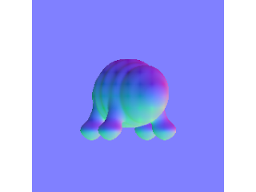

depth-control
depth / depth / depth · gpu-greenroom/mflux_flux2_edit_promptfile_3ref
exact prompt Every supplied reference image shows the same authored organism from a different camera unless explicitly described as a repeated view. Reference images 1 and 3 are repeated the authoritative target view: preserve that view's exact camera, outer silhouette, body proportions, support placement, and major mass distribution. Use every other reference image only to resolve occluded three-dimensional structure belonging to that same organism. Complete one healthy, aesthetically pleasing living quadruped with coherent anatomical transitions, surface structure, material, and gentle character within the authoritative target-view outline.


clay-target
clay / depth / depth · gpu-greenroom/mflux_flux2_edit_promptfile_3ref
exact prompt Every supplied reference image shows the same authored organism from a different camera unless explicitly described as a repeated view. Reference images 1 and 3 are repeated the authoritative target view: preserve that view's exact camera, outer silhouette, body proportions, support placement, and major mass distribution. Use every other reference image only to resolve occluded three-dimensional structure belonging to that same organism. Complete one healthy, aesthetically pleasing living quadruped with coherent anatomical transitions, surface structure, material, and gentle character within the authoritative target-view outline.

normal-target
normal / depth / depth · gpu-greenroom/mflux_flux2_edit_promptfile_3ref
exact prompt Every supplied reference image shows the same authored organism from a different camera unless explicitly described as a repeated view. Reference images 1 and 3 are repeated the authoritative target view: preserve that view's exact camera, outer silhouette, body proportions, support placement, and major mass distribution. Use every other reference image only to resolve occluded three-dimensional structure belonging to that same organism. Complete one healthy, aesthetically pleasing living quadruped with coherent anatomical transitions, surface structure, material, and gentle character within the authoritative target-view outline.

clay-normal-target
clay / depth / normal · gpu-greenroom/mflux_flux2_edit_promptfile_3ref
exact prompt Every supplied reference image shows the same authored organism from a different camera unless explicitly described as a repeated view. Reference images 1 and 3 are repeated the authoritative target view: preserve that view's exact camera, outer silhouette, body proportions, support placement, and major mass distribution. Use every other reference image only to resolve occluded three-dimensional structure belonging to that same organism. Complete one healthy, aesthetically pleasing living quadruped with coherent anatomical transitions, surface structure, material, and gentle character within the authoritative target-view outline.